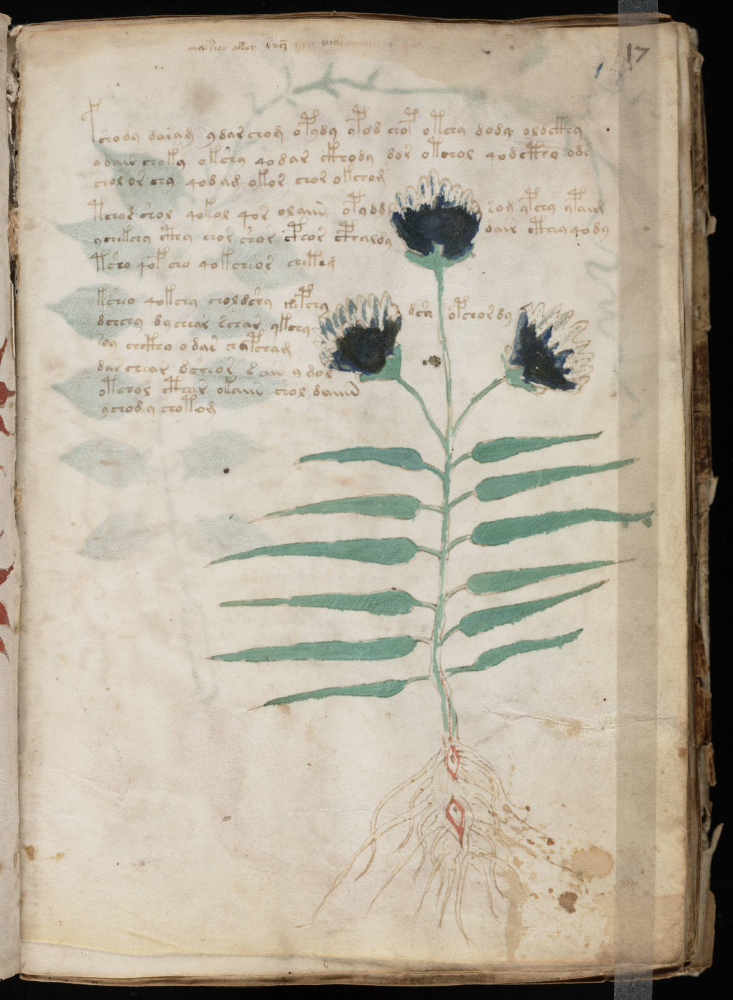

f17r
1fshody daram ydarchom opydy ypod chop otchy dody oldckhy2ydair shoky okshy qodar ckhody dor otchol qodcthy ods3chol or chy qodam okor chor okchom4tcho* shol qokol qor olaiin opydgsom ypchy ypaim5ychekchy cthy chor shor cphor cphaldydair cthey qody6tsho qofcho qokcheor chekeg7ksheo qokchy choldshy zepchydsaopchordy8dchchy dychear schar ykchy9soy chckhy o dar chypcham10dar chear dsheor *ain y mol11otchol cthar okaiin chol daiiin12ychody chotom
